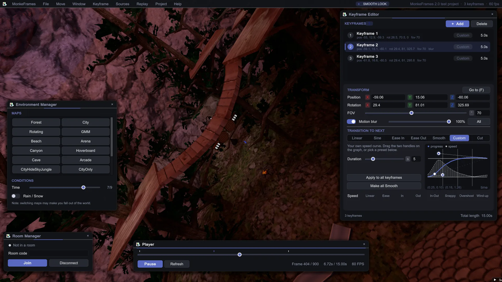
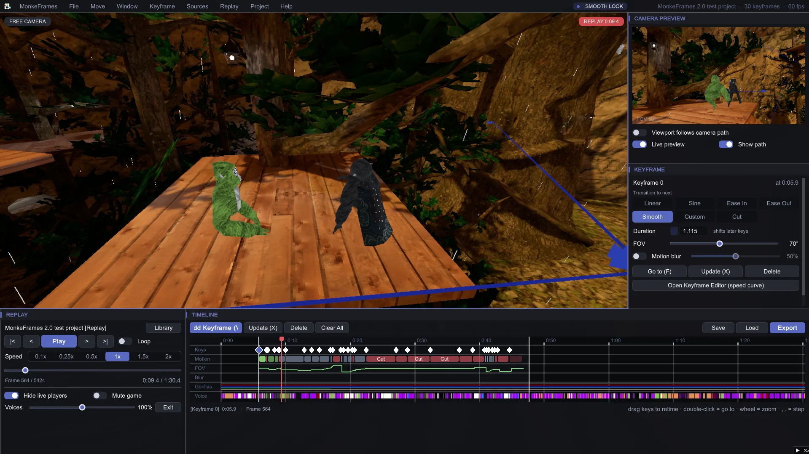
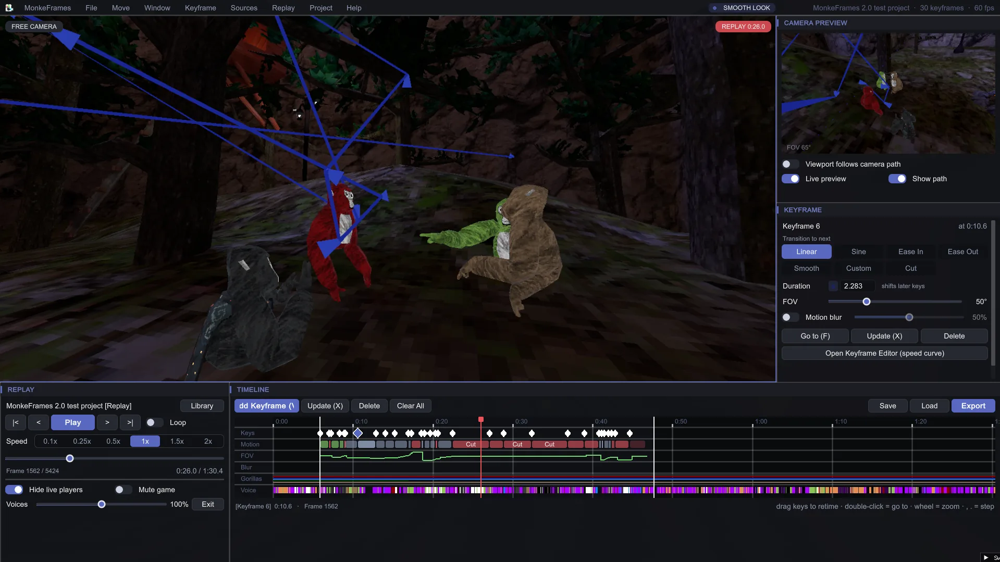

Capture keyframes
Keyframes are points your camera moves to. Chain them together to build editor-ready footage.
- Set position, rotation and field of view
- Pick Linear, Sine, Ease or Smooth transitions
- Shape the speed with a drag-to-edit curve

A camera mod for Gorilla Tag. Fly the camera, set keyframes, and export the video.
SEE IT IN ACTION
A 35-second look. Want the full walkthrough? Watch the 80-second video.
EXPLORE THE TOOLS
KEYFRAMES
Set position, rotation and field of view, then shape the speed between keyframes with a drag-to-edit curve.
See how it works ↗
REPLAYS
Record a lobby and replay it from any angle in Replay Studio, with a full timeline, scrubbing and playback speed.
See the editor ↗
EXPORT
MonkeFrames builds your video with replays and audio at full resolution.
Get MonkeFrames ↗
EXTENSIONS
Add to MonkeFrames with extensions, and browse what the community has built on the Extensions site.
Browse extensions ↗Here’s how MonkeFrames helps.
Fly the camera and set keyframes for position, rotation and field of view.
Replay any lobby from any angle and film it after the fact.
Hit Export and your video is built with replays and audio at full resolution.
Set camera paths with keyframes, replay any lobby from any angle, then export the result at full resolution.
Keyframes are points your camera moves to. Chain them together to build editor-ready footage.
Adjust your setup to fit the way you play and the shot you want to capture.
MonkeFrames will automatically build your video with replays and audio at full resolution.
Download the zip and extract it into your Gorilla Tag install folder.
Fly the camera, drop keyframes, and shape the movement between them.
Hit Export and MonkeFrames builds your video with replays and audio.
Plan the move.
Frame the shot.
Let the footage do the talking.
DOWNLOAD
MonkeFrames is free and open-source.